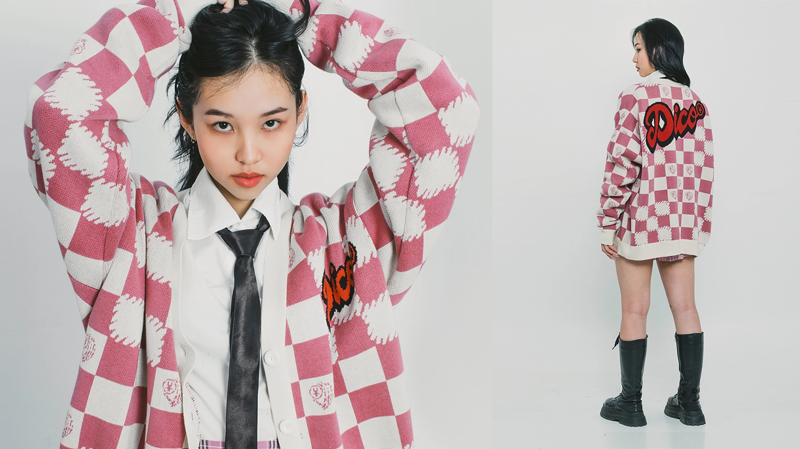
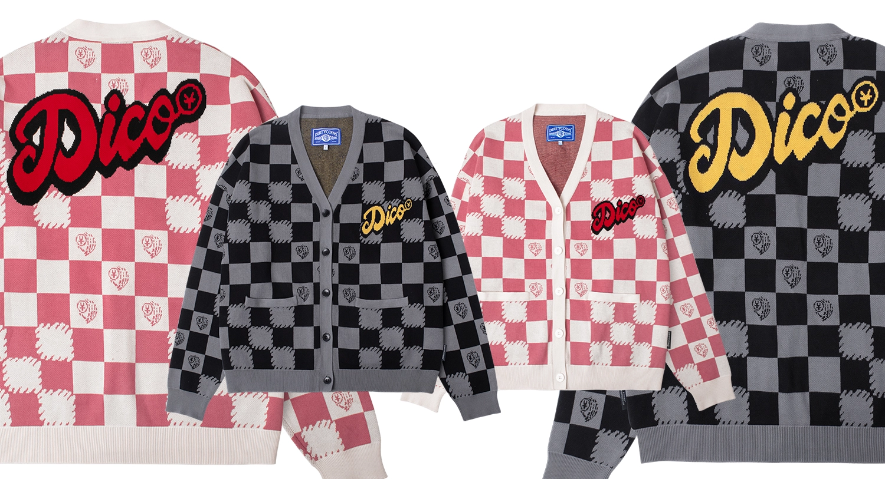

THÊM NGỌT NGÀO CHO MÙA VALENTINE VỚI PHIÊN BẢN CARDIGAN MỚI
14.02 – Lễ Tình nhân sắp đến và cũng là dịp của tất cả các thương hiệu thời trang đang cố gắng hỗ trợ cho các cặp đôi theo nhiều cách khác nhau. Không nằm ngoài cuộc chơi, thay vì theo đuổi hương vị thuần lãng mạn, ngọt ngào, DirtyCoins muốn hướng đến một phong cách mới mẻ, có dấu ấn riêng và tạo nên một bản sắc mới cho sản phẩm lần này.
Lần đầu tiên xuất hiện, sản phẩm Dico Checkerboard Knit Cardigan đã thực sự gây ấn tượng bởi tuyên ngôn táo bạo về thời trang đường phố xen lẫn nét lãng mạn phù hợp cho các couple ‘lên đồ’ thật đẹp vào ngày Valentine. Vẫn trung thành với những biểu tượng đặc trưng của DirtyCoins, đội ngũ thiết kế đã sáng tạo nên sản phẩm thể hiện rõ nét tinh thần đường phố đặc trưng.
Mang sự kết hợp giữa tinh thần Streetwear và sự tinh tế của những xúc cảm ngọt ngào, Dico Checkerboard Knit Cardigan có tính ứng dụng cao, dễ dàng kết hợp với nhiều items khác trong tủ đồ. Không chỉ thế, sản phẩm còn giúp người mặc ‘level up’ ngoại hình một cách nhanh chóng bởi tính hiện đại, năng động cùng form dáng ‘chuẩn chỉnh’ nữa đó!
Đặc biệt nhất phải kể đến họa tiết Checkerboard thời thượng - điều tạo nên nét độc đáo cho sản phẩm. Họa tiết này vốn được xem là một trong những biểu lộ được bản ngã thời trang của người mặc, tạo nên vẻ ngoài bắt mắt cũng như ý thức tự do - phóng khoáng của gen Z đối với thời trang. Có thể nói, đây là họa tiết được ‘ưa chuộng’ bởi nhiều bạn trẻ và có lẽ sẽ không phải đối mặt với sự ‘thoái trào’ bởi tính bụi bặm và sành điệu của nó.
Mang dáng vẻ tinh tế cùng những cảm hứng sáng tạo vượt thời đại, có thể nói “Y Logo Leather Belt” được xem là một khoản chi xứng đáng không hề thua kém giày dép hay túi xách. Nó không chỉ bền đẹp mà còn thể hiện hình ảnh chỉn chu, chuyên nghiệp của bạn mà còn có thể giúp bạn tạo nên phong cách sang trọng và trưởng thành hơn.
Ngoài phong cách thiết kế lạ mắt và đầy tính thời trang, Dico Checkerboard Knit Cardigan với hai phối màu hồng và xám còn được nhìn nhận là item hoàn hảo cho mọi outfit, đặc biệt có thể mặc đôi cùng crush hay người thương trong dịp Valentine này nữa đó!
Cùng ngắm qua một vài cách phối cực xịn mùa Valentine này với Dico Checkerboard Knit Cardigan nhé!